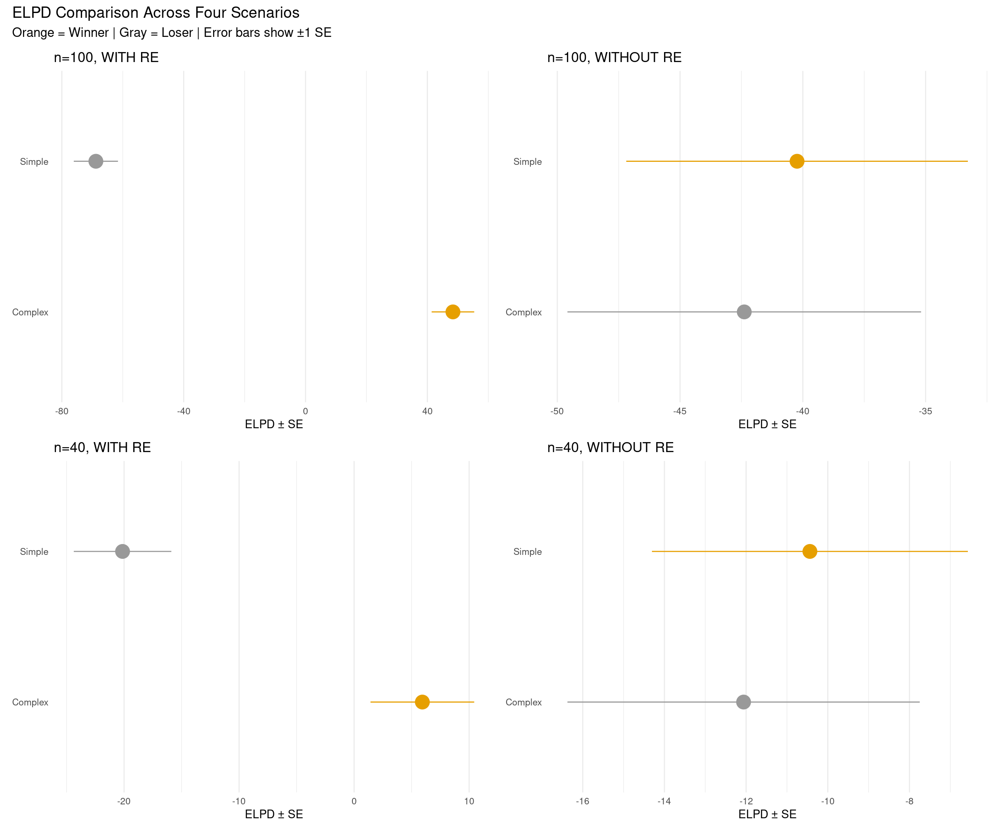
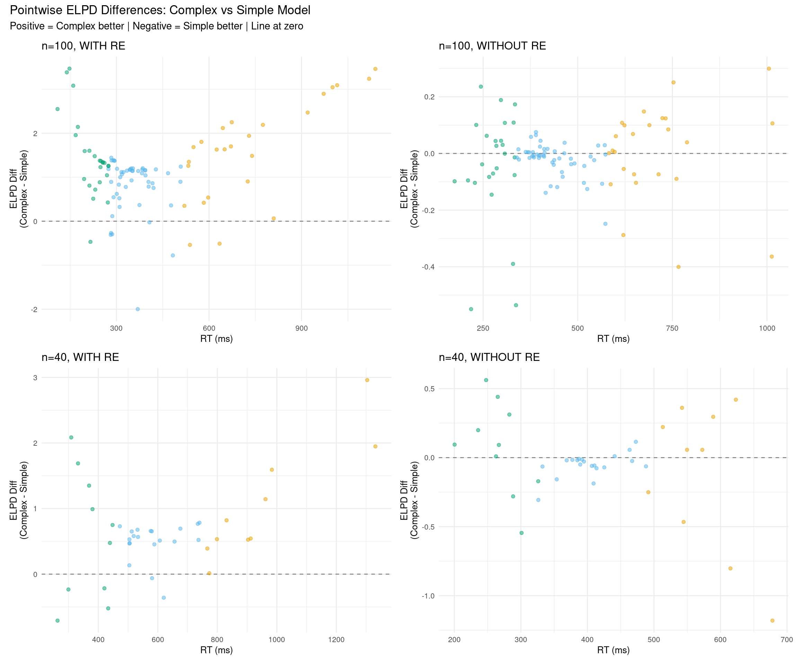
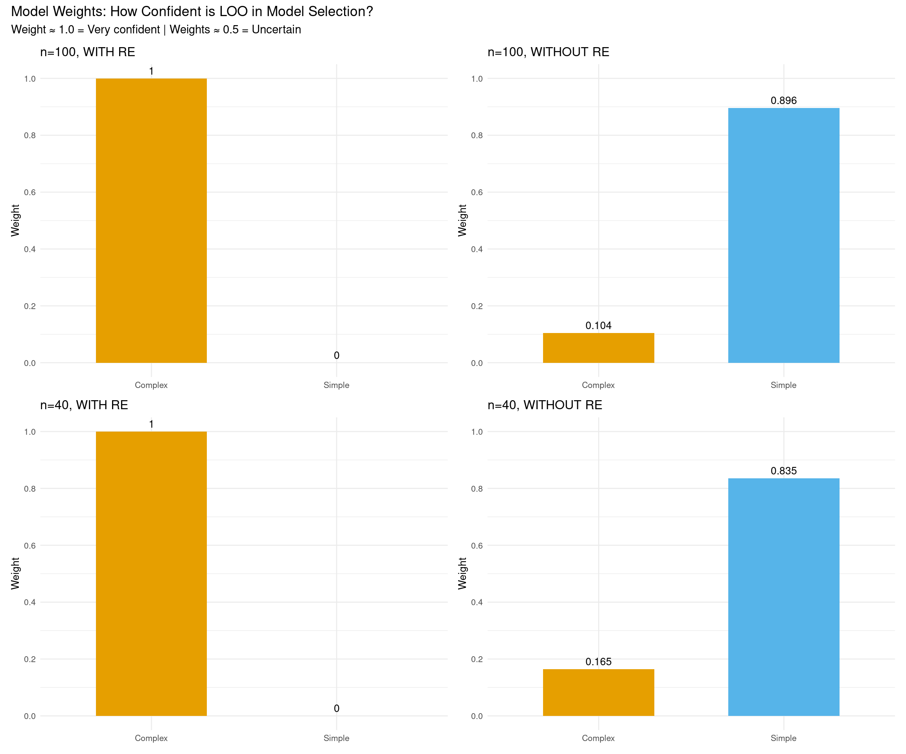
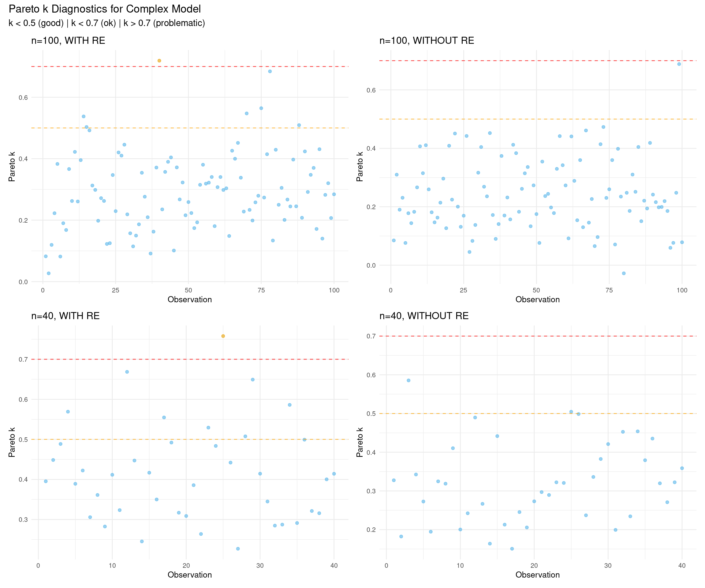
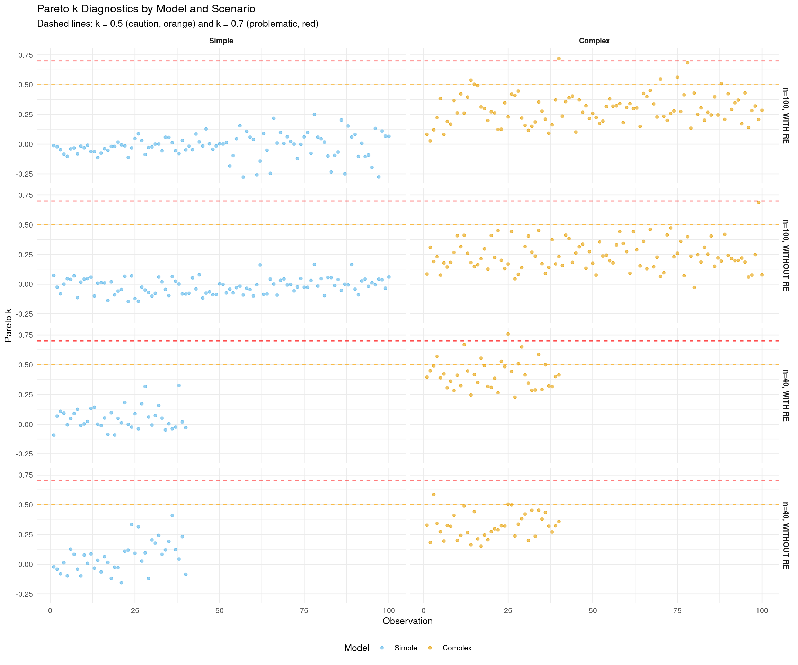
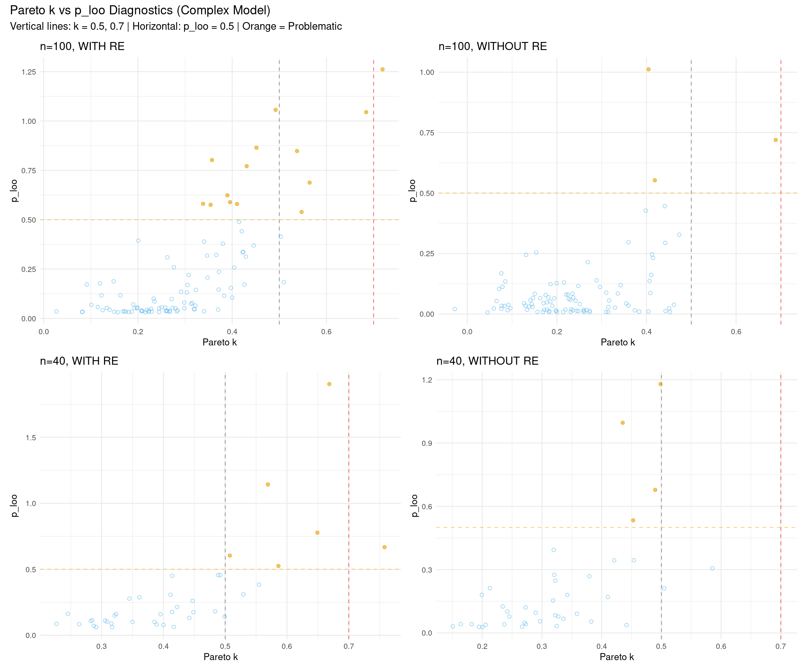

# Configure backend BEFORE loading brms
if (requireNamespace("cmdstanr", quietly = TRUE)) {
tryCatch({
cmdstanr::cmdstan_path()
options(brms.backend = "cmdstanr")
}, error = function(e) {
options(brms.backend = "rstan")
})
}
library(brms)
library(tidyverse)
library(bayesplot)
library(posterior)
library(loo)
library(patchwork)
# Set seed for reproducibility
set.seed(42)LOO-PSIS: Model Comparison with Cross-Validation
Bayesian Mixed Effects Models with brms for Linguists
1 LOO-PSIS: Leave-One-Out Cross-Validation
LOO-PSIS (Leave-One-Out Cross-Validation with Pareto-Smoothed Importance Sampling) helps answer: Which model predicts new data better?
1.1 Why Use LOO Instead of Prior Comparison?
These approaches answer different questions:
Prior comparison (what we did earlier):
- Shows if posterior coefficient estimates and effect sizes are sensitive to prior choice
- Good for: reporting robustness of conclusions
- Question: “Do my results depend on my priors?”
LOO comparison (this approach):
- Shows which model predicts better
- Good for: feature selection, model building
- Question: “Which model structure produces better predictions?”
- Can compare:
- Different priors (e.g., narrow/regularizing vs. wide priors)
- Different likelihoods (e.g., normal vs. lognormal)
- Different model structures (e.g., with/without random slopes)
You can do both:
- First: Compare different priors within same model structure (sensitivity analysis)
- Then: Use LOO to compare different model structures with best priors (model selection)
1.2 Why Use LOO Instead of Bayes Factors?
LOO advantages:
- Priors less important because we evaluate predictive performance on new data
- Number of samples less important - most uncertainty comes from the data itself
- More stable and interpretable
Bayes factors:
- Very sensitive to prior choice
- Sensitive to number of samples
- Harder to interpret (what does BF = 3.2 mean?)
1.3 Setup
1.4 Create Four Test Datasets
We’ll create four datasets to test how LOO behaves under different conditions:
# Ensure tidyverse is loaded for pipe operator
library(dplyr)
# Helper function to generate RT data
generate_rt_data <- function(n_obs, with_random_effects = TRUE, seed = 42) {
set.seed(seed)
# Determine number of subjects and items (ensure at least 2 for factors)
n_subj <- max(5, min(10, ceiling(n_obs / 8)))
n_items <- max(5, min(10, ceiling(n_obs / 8)))
# Create base structure ensuring balanced conditions
n_per_cond <- ceiling(n_obs / 2)
data <- dplyr::bind_rows(
expand.grid(
subject = 1:n_subj,
item = 1:n_items,
condition = "A"
) %>% dplyr::slice(1:n_per_cond),
expand.grid(
subject = 1:n_subj,
item = 1:n_items,
condition = "B"
) %>% dplyr::slice(1:(n_obs - n_per_cond))
) %>%
dplyr::mutate(
subject = factor(subject),
item = factor(item),
condition = factor(condition)
)
if (with_random_effects) {
# Generate data WITH true random effects (STRONGER effects for clear demonstration)
subj_intercept <- rnorm(n_subj, 0, 0.4) # Increased from 0.2
subj_slope <- rnorm(n_subj, 0, 0.2) # Increased from 0.1
item_intercept <- rnorm(n_items, 0, 0.3) # Increased from 0.15
data <- data %>%
dplyr::mutate(
re_subject_int = subj_intercept[as.numeric(subject)],
re_subject_slope = subj_slope[as.numeric(subject)] * (condition == "B"),
re_item = item_intercept[as.numeric(item)],
log_rt = 6 + 0.15 * (condition == "B") +
re_subject_int + re_subject_slope + re_item +
rnorm(n(), 0, 0.15), # Reduced residual noise from 0.2
rt = exp(log_rt)
) %>%
dplyr::select(subject, item, condition, log_rt, rt)
} else {
# Generate data WITHOUT random effects (pure fixed effect + noise)
data <- data %>%
dplyr::mutate(
log_rt = 6 + 0.15 * (condition == "B") + rnorm(n(), 0, 0.4), # Increased noise
rt = exp(log_rt)
)
}
return(data)
}
# Generate four datasets
rt_data_100_with <- generate_rt_data(100, with_random_effects = TRUE, seed = 123)
rt_data_100_without <- generate_rt_data(100, with_random_effects = FALSE, seed = 124)
rt_data_40_with <- generate_rt_data(40, with_random_effects = TRUE, seed = 125)
rt_data_40_without <- generate_rt_data(40, with_random_effects = FALSE, seed = 126)
# Create summary table
data_summaries <- data.frame(
Scenario = c("n=100, WITH RE", "n=100, WITHOUT RE", "n=40, WITH RE", "n=40, WITHOUT RE"),
N = c(nrow(rt_data_100_with), nrow(rt_data_100_without),
nrow(rt_data_40_with), nrow(rt_data_40_without)),
Mean_logRT = c(
round(mean(rt_data_100_with$log_rt), 2),
round(mean(rt_data_100_without$log_rt), 2),
round(mean(rt_data_40_with$log_rt), 2),
round(mean(rt_data_40_without$log_rt), 2)
),
SD_logRT = c(
round(sd(rt_data_100_with$log_rt), 3),
round(sd(rt_data_100_without$log_rt), 3),
round(sd(rt_data_40_with$log_rt), 3),
round(sd(rt_data_40_without$log_rt), 3)
),
True_Structure = c("Random slopes + intercepts", "Fixed effect only",
"Random slopes + intercepts", "Fixed effect only")
)
knitr::kable(data_summaries,
caption = "Four Test Datasets: 2×2 Design (Sample Size × Data Structure)",
col.names = c("Scenario", "N", "Mean log-RT", "SD log-RT", "True Data Structure"),
align = c("l", "r", "r", "r", "l"))| Scenario | N | Mean log-RT | SD log-RT | True Data Structure |
|---|---|---|---|---|
| n=100, WITH RE | 100 | 5.91 | 0.478 | Random slopes + intercepts |
| n=100, WITHOUT RE | 100 | 6.08 | 0.366 | Fixed effect only |
| n=40, WITH RE | 40 | 6.37 | 0.377 | Random slopes + intercepts |
| n=40, WITHOUT RE | 40 | 5.98 | 0.296 | Fixed effect only |
1.5 Fit Models for All Four Scenarios
For each dataset, we’ll fit two models:
- Simple model: No random effects (just fixed effects) -
log_rt ~ condition - Complex model: Random slopes for subjects -
(1 + condition | subject) + (1 | item)
# Ensure brms is loaded
library(brms)
# Define priors
# Simple model: no random effects, just fixed effects + residual
rt_priors_simple <- c(
prior(normal(6, 1.5), class = Intercept, lb = 4),
prior(normal(0, 0.5), class = b),
prior(exponential(1), class = sigma)
)
# Complex model: includes random effects
rt_priors_complex <- c(
prior(normal(6, 1.5), class = Intercept, lb = 4),
prior(normal(0, 0.5), class = b),
prior(exponential(1), class = sigma),
prior(exponential(1), class = sd),
prior(lkj(2), class = cor)
)
# Create fits directory
dir.create("fits", showWarnings = FALSE, recursive = TRUE)
# Helper function to fit or load models
fit_or_load <- function(model_name, formula, data, priors) {
filepath <- paste0("fits/", model_name, ".rds")
if (file.exists(filepath)) {
readRDS(filepath)
} else {
fit <- brm(
formula = formula,
data = data,
family = gaussian(),
prior = priors,
chains = 4,
iter = 2000,
cores = 4,
backend = "cmdstanr",
seed = 1234,
refresh = 0
)
saveRDS(fit, filepath)
fit
}
}
# Scenario 1: n=100, WITH random effects
fit_simple_100_with <- fit_or_load(
"fit_simple_100_with",
log_rt ~ condition,
rt_data_100_with,
rt_priors_simple
)
fit_complex_100_with <- fit_or_load(
"fit_complex_100_with",
log_rt ~ condition + (1 + condition | subject) + (1 | item),
rt_data_100_with,
rt_priors_complex
)
# Scenario 2: n=100, WITHOUT random effects
fit_simple_100_without <- fit_or_load(
"fit_simple_100_without",
log_rt ~ condition,
rt_data_100_without,
rt_priors_simple
)
fit_complex_100_without <- fit_or_load(
"fit_complex_100_without",
log_rt ~ condition + (1 + condition | subject) + (1 | item),
rt_data_100_without,
rt_priors_complex
)
# Scenario 3: n=40, WITH random effects
fit_simple_40_with <- fit_or_load(
"fit_simple_40_with",
log_rt ~ condition,
rt_data_40_with,
rt_priors_simple
)
fit_complex_40_with <- fit_or_load(
"fit_complex_40_with",
log_rt ~ condition + (1 + condition | subject) + (1 | item),
rt_data_40_with,
rt_priors_complex
)
# Scenario 4: n=40, WITHOUT random effects
fit_simple_40_without <- fit_or_load(
"fit_simple_40_without",
log_rt ~ condition,
rt_data_40_without,
rt_priors_simple
)
fit_complex_40_without <- fit_or_load(
"fit_complex_40_without",
log_rt ~ condition + (1 + condition | subject) + (1 | item),
rt_data_40_without,
rt_priors_complex
)2 Comparing Models with LOO Across Four Scenarios
2.1 Add LOO Criterion to All Models
# Add LOO criterion to all models
fit_simple_100_with <- add_criterion(fit_simple_100_with, "loo")
fit_complex_100_with <- add_criterion(fit_complex_100_with, "loo")
fit_simple_100_without <- add_criterion(fit_simple_100_without, "loo")
fit_complex_100_without <- add_criterion(fit_complex_100_without, "loo")
fit_simple_40_with <- add_criterion(fit_simple_40_with, "loo")
fit_complex_40_with <- add_criterion(fit_complex_40_with, "loo")
fit_simple_40_without <- add_criterion(fit_simple_40_without, "loo")
fit_complex_40_without <- add_criterion(fit_complex_40_without, "loo")2.2 Compare Models for Each Scenario
# Compare models for each scenario
loo_comp_100_with <- loo_compare(fit_simple_100_with, fit_complex_100_with)
loo_comp_100_without <- loo_compare(fit_simple_100_without, fit_complex_100_without)
loo_comp_40_with <- loo_compare(fit_simple_40_with, fit_complex_40_with)
loo_comp_40_without <- loo_compare(fit_simple_40_without, fit_complex_40_without)
# Helper function to extract comparison info
extract_comparison <- function(loo_comp, scenario_name) {
winner <- rownames(loo_comp)[1]
winner_clean <- gsub("fit_|_100_with|_100_without|_40_with|_40_without", "", winner)
winner_clean <- tools::toTitleCase(winner_clean)
elpd_diff <- loo_comp[2, "elpd_diff"]
se_diff <- loo_comp[2, "se_diff"]
ratio <- abs(elpd_diff) / se_diff
if (ratio < 1) {
interpretation <- "Essentially equivalent"
} else if (ratio < 2) {
interpretation <- "Weak evidence"
} else if (ratio < 4) {
interpretation <- "Moderate evidence"
} else if (ratio < 10) {
interpretation <- "Strong evidence"
} else {
interpretation <- "Very strong evidence"
}
data.frame(
Scenario = scenario_name,
Winner = winner_clean,
ELPD_diff = round(elpd_diff, 2),
SE_diff = round(se_diff, 2),
Ratio = round(ratio, 2),
Interpretation = interpretation
)
}
# Create comprehensive comparison table
comparison_table <- rbind(
extract_comparison(loo_comp_100_with, "n=100, WITH RE"),
extract_comparison(loo_comp_100_without, "n=100, WITHOUT RE"),
extract_comparison(loo_comp_40_with, "n=40, WITH RE"),
extract_comparison(loo_comp_40_without, "n=40, WITHOUT RE")
)
knitr::kable(comparison_table,
caption = "LOO Model Comparison Across Four Scenarios",
col.names = c("Scenario", "Winner", "ELPD Δ", "SE", "Ratio", "Interpretation"),
align = c("l", "l", "r", "r", "r", "l"),
row.names = FALSE)| Scenario | Winner | ELPD Δ | SE | Ratio | Interpretation |
|---|---|---|---|---|---|
| n=100, WITH RE | Complex | -117.21 | 9.25 | 12.68 | Very strong evidence |
| n=100, WITHOUT RE | Simple | -2.15 | 1.35 | 1.59 | Weak evidence |
| n=40, WITH RE | Complex | -26.06 | 4.44 | 5.87 | Strong evidence |
| n=40, WITHOUT RE | Simple | -1.62 | 2.02 | 0.80 | Essentially equivalent |
Key patterns to observe:
- n=100, WITH RE: Complex model wins decisively (ratio > 10)
- n=100, WITHOUT RE: Simple model wins weakly (ratio ≈ 1-2)
- n=40, WITH RE: Complex model wins strongly (ratio ≈ 6)
- n=40, WITHOUT RE: Models essentially equivalent (ratio < 1)
2.3 Detailed Ratio Analysis
The ratio (|ELPD_diff| / SE) tells us how many standard errors separate the models. Here’s a detailed breakdown:
# Extract detailed ratio information for both models in each scenario
ratio_details <- data.frame()
scenarios_list <- list(
list(comp = loo_comp_100_with, name = "n=100, WITH RE"),
list(comp = loo_comp_100_without, name = "n=100, WITHOUT RE"),
list(comp = loo_comp_40_with, name = "n=40, WITH RE"),
list(comp = loo_comp_40_without, name = "n=40, WITHOUT RE")
)
for (scenario in scenarios_list) {
comp <- scenario$comp
for (i in 1:nrow(comp)) {
model_name <- rownames(comp)[i]
model_clean <- tools::toTitleCase(gsub("fit_|_.*", "", model_name))
elpd <- comp[i, "elpd_loo"]
se_elpd <- comp[i, "se_elpd_loo"]
elpd_diff <- comp[i, "elpd_diff"]
se_diff <- comp[i, "se_diff"]
if (i == 1) {
# Best model
ratio <- NA
interpretation <- "Best model (reference)"
} else {
ratio <- abs(elpd_diff) / se_diff
if (ratio < 1) {
interpretation <- "Essentially equivalent"
} else if (ratio < 2) {
interpretation <- "Weak evidence"
} else if (ratio < 4) {
interpretation <- "Moderate evidence"
} else if (ratio < 10) {
interpretation <- "Strong evidence"
} else {
interpretation <- "Very strong evidence"
}
}
ratio_details <- rbind(ratio_details, data.frame(
Scenario = scenario$name,
Model = model_clean,
ELPD = round(elpd, 1),
SE_ELPD = round(se_elpd, 1),
ELPD_diff = ifelse(i == 1, "—", as.character(round(elpd_diff, 2))),
SE_diff = ifelse(i == 1, "—", as.character(round(se_diff, 2))),
Ratio = ifelse(i == 1, "—", as.character(round(ratio, 2))),
Interpretation = interpretation
))
}
}
knitr::kable(ratio_details,
caption = "Detailed Model Comparison with Ratios (|ELPD_diff| / SE)",
col.names = c("Scenario", "Model", "ELPD", "SE", "ELPD Δ", "SE Δ", "Ratio (SE)", "Interpretation"),
align = c("l", "l", "r", "r", "r", "r", "r", "l"),
row.names = FALSE)| Scenario | Model | ELPD | SE | ELPD Δ | SE Δ | Ratio (SE) | Interpretation |
|---|---|---|---|---|---|---|---|
| n=100, WITH RE | Complex | 48.4 | 7.0 | — | — | — | Best model (reference) |
| n=100, WITH RE | Simple | -68.8 | 7.3 | -117.21 | 9.25 | 12.68 | Very strong evidence |
| n=100, WITHOUT RE | Simple | -40.2 | 7.0 | — | — | — | Best model (reference) |
| n=100, WITHOUT RE | Complex | -42.4 | 7.2 | -2.15 | 1.35 | 1.59 | Weak evidence |
| n=40, WITH RE | Complex | 5.9 | 4.5 | — | — | — | Best model (reference) |
| n=40, WITH RE | Simple | -20.1 | 4.2 | -26.06 | 4.44 | 5.87 | Strong evidence |
| n=40, WITHOUT RE | Simple | -10.4 | 3.9 | — | — | — | Best model (reference) |
| n=40, WITHOUT RE | Complex | -12.1 | 4.3 | -1.62 | 2.02 | 0.8 | Essentially equivalent |
How to interpret the ratio:
- Ratio < 1: Difference is smaller than the uncertainty → Models are essentially equivalent
- Ratio 1-2: Weak evidence → Difference is 1-2 standard errors, suggestive but not conclusive
- Ratio 2-4: Moderate evidence → Difference is 2-4 standard errors, reasonable confidence
- Ratio 4-10: Strong evidence → Difference is 4-10 standard errors, high confidence
- Ratio > 10: Very strong evidence → Difference is >10 standard errors, extremely confident
3 Understanding ELPD
3.1 What ELPD Actually Means
ELPD = “Expected Log Pointwise Predictive Density”
- Expected: We marginalize over all possible future data
- Log: Works on log scale for numerical stability
- Pointwise: Evaluated separately for each data point
- Predictive Density: How well the model predicts new data
Key properties:
- Higher is better (like R² in frequentist stats)
- Difference matters: Which model predicts new data better?
- Not about fit to current data: About generalization
- Takes into account the uncertainty of predictions
3.2 Rule of Thumb for Model Comparison
Interpreting elpd_diff (expected log pointwise predictive density difference):
| elpd_diff | Ratio* | Interpretation | Action |
|---|---|---|---|
| |diff| < 4 | < 4 | Equivalent models | Pick simpler one |
| 4-10 | 4-10 | Moderate difference | Prefer larger elpd |
| > 10 | > 10 | Clear winner | Prefer larger elpd |
*Ratio = |elpd_diff| / se_diff (how many standard errors apart?)
The ratio tells you:
- < 1: Difference could be random noise
- 1-2: Weak evidence for difference
- 2-4: Moderate evidence
4: Strong evidence
3.3 Visualizations: Side-by-Side Comparisons
3.3.1 Plot 1: ELPD Comparison (2×2 Grid)
# Helper function to create ELPD plot for one scenario
plot_elpd_comparison <- function(loo_comp, scenario_name) {
loo_df <- as.data.frame(loo_comp) %>%
rownames_to_column("model") %>%
mutate(
model_clean = tools::toTitleCase(gsub("fit_|_.*", "", model)),
is_winner = row_number() == 1
)
ggplot(loo_df, aes(x = elpd_loo, y = model_clean, color = is_winner)) +
geom_pointrange(
aes(xmin = elpd_loo - se_elpd_loo,
xmax = elpd_loo + se_elpd_loo),
size = 1.2
) +
scale_color_manual(values = c("FALSE" = "gray60", "TRUE" = "#E69F00")) +
labs(
title = scenario_name,
x = "ELPD ± SE",
y = NULL
) +
theme_minimal(base_size = 10) +
theme(
axis.ticks.y = element_blank(),
panel.grid.major.y = element_blank(),
legend.position = "none"
)
}
# Create four plots
p1 <- plot_elpd_comparison(loo_comp_100_with, "n=100, WITH RE")
p2 <- plot_elpd_comparison(loo_comp_100_without, "n=100, WITHOUT RE")
p3 <- plot_elpd_comparison(loo_comp_40_with, "n=40, WITH RE")
p4 <- plot_elpd_comparison(loo_comp_40_without, "n=40, WITHOUT RE")
# Combine in 2×2 grid
(p1 + p2) / (p3 + p4) +
plot_annotation(
title = "ELPD Comparison Across Four Scenarios",
subtitle = "Orange = Winner | Gray = Loser | Error bars show ±1 SE"
)
3.3.2 Plot 2: Pointwise ELPD Differences by RT (2×2 Grid)
# Helper function to plot pointwise ELPD differences
plot_elpd_differences <- function(fit_simple, fit_complex, data, scenario_name) {
diff_data <- data %>%
mutate(
diff_elpd = fit_complex$criteria$loo$pointwise[, "elpd_loo"] -
fit_simple$criteria$loo$pointwise[, "elpd_loo"],
rt_category = case_when(
rt < quantile(rt, 0.25) ~ "Fast",
rt > quantile(rt, 0.75) ~ "Slow",
TRUE ~ "Medium"
),
rt_category = factor(rt_category, levels = c("Fast", "Medium", "Slow"))
)
ggplot(diff_data, aes(x = rt, y = diff_elpd, color = rt_category)) +
geom_hline(yintercept = 0, linetype = "dashed", color = "gray50") +
geom_point(alpha = 0.5, size = 1.5) +
scale_color_manual(
values = c("Fast" = "#009E73", "Medium" = "#56B4E9", "Slow" = "#E69F00"),
name = "RT"
) +
labs(
title = scenario_name,
x = "RT (ms)",
y = "ELPD Diff\n(Complex - Simple)"
) +
theme_minimal(base_size = 10) +
theme(legend.position = "none")
}
# Create four plots
p1 <- plot_elpd_differences(fit_simple_100_with, fit_complex_100_with,
rt_data_100_with, "n=100, WITH RE")
p2 <- plot_elpd_differences(fit_simple_100_without, fit_complex_100_without,
rt_data_100_without, "n=100, WITHOUT RE")
p3 <- plot_elpd_differences(fit_simple_40_with, fit_complex_40_with,
rt_data_40_with, "n=40, WITH RE")
p4 <- plot_elpd_differences(fit_simple_40_without, fit_complex_40_without,
rt_data_40_without, "n=40, WITHOUT RE")
# Combine in 2×2 grid
(p1 + p2) / (p3 + p4) +
plot_annotation(
title = "Pointwise ELPD Differences: Complex vs Simple Model",
subtitle = "Positive = Complex better | Negative = Simple better | Line at zero"
)
What to look for:
- WITH RE scenarios: Positive values (complex better) when data truly has random slopes
- WITHOUT RE scenarios: Near zero or negative values (simple better or equivalent)
- Sample size effect: More scatter with n=40, clearer pattern with n=100
3.3.3 Plot 3: Model Weights (2×2 Grid)
# Helper function to plot model weights
plot_model_weights <- function(fit_simple, fit_complex, scenario_name) {
weights <- model_weights(fit_simple, fit_complex, weights = "loo")
weights_df <- data.frame(
Model = c("Simple", "Complex"),
Weight = as.numeric(weights)
)
ggplot(weights_df, aes(x = Model, y = Weight, fill = Model)) +
geom_col(width = 0.6) +
geom_text(aes(label = round(Weight, 3)),
vjust = -0.5, size = 3.5) +
scale_fill_manual(values = c("Simple" = "#56B4E9", "Complex" = "#E69F00")) +
scale_y_continuous(limits = c(0, 1), breaks = seq(0, 1, 0.2)) +
labs(
title = scenario_name,
x = NULL,
y = "Weight"
) +
theme_minimal(base_size = 10) +
theme(legend.position = "none")
}
# Create four plots
p1 <- plot_model_weights(fit_simple_100_with, fit_complex_100_with, "n=100, WITH RE")
p2 <- plot_model_weights(fit_simple_100_without, fit_complex_100_without, "n=100, WITHOUT RE")
p3 <- plot_model_weights(fit_simple_40_with, fit_complex_40_with, "n=40, WITH RE")
p4 <- plot_model_weights(fit_simple_40_without, fit_complex_40_without, "n=40, WITHOUT RE")
# Combine in 2×2 grid
(p1 + p2) / (p3 + p4) +
plot_annotation(
title = "Model Weights: How Confident is LOO in Model Selection?",
subtitle = "Weight ≈ 1.0 = Very confident | Weights ≈ 0.5 = Uncertain"
)
3.3.4 Plot 4: Pareto k Diagnostics (2×2 Grid)
# Helper function to plot Pareto k values
plot_pareto_k <- function(fit_complex, scenario_name) {
k_values <- fit_complex$criteria$loo$diagnostics$pareto_k
k_df <- data.frame(
observation = 1:length(k_values),
pareto_k = k_values,
problematic = k_values > 0.7
)
ggplot(k_df, aes(x = observation, y = pareto_k, color = problematic)) +
geom_point(alpha = 0.6, size = 1.5) +
geom_hline(yintercept = 0.5, linetype = "dashed", color = "orange", alpha = 0.7) +
geom_hline(yintercept = 0.7, linetype = "dashed", color = "red", alpha = 0.7) +
scale_color_manual(values = c("FALSE" = "#56B4E9", "TRUE" = "#E69F00")) +
labs(
title = scenario_name,
x = "Observation",
y = "Pareto k"
) +
theme_minimal(base_size = 10) +
theme(legend.position = "none")
}
# Create four plots (use complex model for diagnostics)
p1 <- plot_pareto_k(fit_complex_100_with, "n=100, WITH RE")
p2 <- plot_pareto_k(fit_complex_100_without, "n=100, WITHOUT RE")
p3 <- plot_pareto_k(fit_complex_40_with, "n=40, WITH RE")
p4 <- plot_pareto_k(fit_complex_40_without, "n=40, WITHOUT RE")
# Combine in 2×2 grid
(p1 + p2) / (p3 + p4) +
plot_annotation(
title = "Pareto k Diagnostics for Complex Model",
subtitle = "k < 0.5 (good) | k < 0.7 (ok) | k > 0.7 (problematic)"
)
4 Cross-Validation Variants
Different CV strategies for different research questions:
LOO (Leave-One-Out):
- Default choice
- For general predictive performance
- Treats all observations as exchangeable
K-fold CV:
- Split data into K groups
- For multilevel models: sample from groups
- Useful for: predicting unseen data from existing subjects
LOGO-CV (Leave-One-Group-Out):
- Leave out entire groups (e.g., subjects)
- For predicting: completely new subjects
- More conservative than LOO
# Example: 10-fold cross-validation
# (computationally expensive - not run by default)
# fit_complex_100_with_kfold <- kfold(fit_complex_100_with, K = 10, folds = "stratified")
cv_methods <- data.frame(
Method = c("loo()", "kfold()", "kfold() with group"),
Description = c(
"Leave-one-out (default)",
"K-fold cross-validation",
"Leave-one-group-out (e.g., subjects)"
),
Use_Case = c(
"General predictive performance",
"Unseen data from existing subjects",
"Completely new subjects"
)
)
knitr::kable(cv_methods,
caption = "Cross-Validation Variants in brms",
col.names = c("Method", "Description", "Use Case"))| Method | Description | Use Case |
|---|---|---|
| loo() | Leave-one-out (default) | General predictive performance |
| kfold() | K-fold cross-validation | Unseen data from existing subjects |
| kfold() with group | Leave-one-group-out (e.g., subjects) | Completely new subjects |
4.1 Key Insights from Four Scenarios
# Summarize key findings
insights_df <- data.frame(
Scenario = c("n=100, WITH RE", "n=100, WITHOUT RE", "n=40, WITH RE", "n=40, WITHOUT RE"),
Sample_Size = c("Large", "Large", "Small", "Small"),
True_Structure = c("Complex", "Simple", "Complex", "Simple"),
Expected_Winner = c("Complex", "Simple", "Complex", "Simple/Equiv"),
Certainty = c("Very High", "Moderate", "High", "Low"),
Key_Lesson = c(
"LOO strongly identifies complexity",
"LOO avoids overfitting (weak preference)",
"Strong evidence even with less data",
"Hard to distinguish with limited data"
)
)
knitr::kable(insights_df,
caption = "Summary of LOO Behavior Across Scenarios",
col.names = c("Scenario", "Sample Size", "True Structure", "Expected Winner", "Certainty", "Key Lesson"),
align = c("l", "l", "l", "l", "l", "l"))| Scenario | Sample Size | True Structure | Expected Winner | Certainty | Key Lesson |
|---|---|---|---|---|---|
| n=100, WITH RE | Large | Complex | Complex | Very High | LOO strongly identifies complexity |
| n=100, WITHOUT RE | Large | Simple | Simple | Moderate | LOO avoids overfitting (weak preference) |
| n=40, WITH RE | Small | Complex | Complex | High | Strong evidence even with less data |
| n=40, WITHOUT RE | Small | Simple | Simple/Equiv | Low | Hard to distinguish with limited data |
Main takeaways:
- LOO works best with adequate data (n ≥ 100): Clear winners, confident weights
- LOO respects true data structure: Finds complexity when it exists, avoids it when it doesn’t
- Small samples = high uncertainty: Model weights closer to 0.5, wider error bars
- Pareto k generally good: Few problematic observations across all scenarios
5 Pareto k Diagnostics
5.1 Identifying Influential Points
The LOO calculation uses Pareto Smoothed Importance Sampling (PSIS). The Pareto k diagnostic tells us if the approximation is reliable:
Pareto k thresholds (sample-size dependent):
- k < 0.5: Good (reliable estimate)
- 0.5 < k < 0.7: Okay (use with caution)
- k > 0.7: Bad (LOO estimate unreliable)
# Check Pareto k values for all scenarios
k_diagnostics <- data.frame()
k_threshold <- 0.7
scenarios <- list(
list(fit = fit_complex_100_with, name = "n=100, WITH RE"),
list(fit = fit_complex_100_without, name = "n=100, WITHOUT RE"),
list(fit = fit_complex_40_with, name = "n=40, WITH RE"),
list(fit = fit_complex_40_without, name = "n=40, WITHOUT RE")
)
for (scenario in scenarios) {
k_values <- scenario$fit$criteria$loo$diagnostics$pareto_k
n_bad <- sum(k_values > k_threshold)
n_total <- length(k_values)
status <- ifelse(n_bad > 0,
"⚠ Consider reloo = TRUE",
"✓ All k values good")
k_diagnostics <- rbind(k_diagnostics, data.frame(
Scenario = scenario$name,
Problematic = paste0(n_bad, " / ", n_total),
Status = status
))
}
knitr::kable(k_diagnostics,
caption = paste0("Pareto k Diagnostics Across Scenarios (threshold k > ", k_threshold, ")"),
col.names = c("Scenario", "Observations with k > 0.7", "Status"),
align = c("l", "r", "l"))| Scenario | Observations with k > 0.7 | Status |
|---|---|---|
| n=100, WITH RE | 1 / 100 | ⚠ Consider reloo = TRUE |
| n=100, WITHOUT RE | 0 / 100 | ✓ All k values good |
| n=40, WITH RE | 1 / 40 | ⚠ Consider reloo = TRUE |
| n=40, WITHOUT RE | 0 / 40 | ✓ All k values good |
5.2 Visualize Pareto k Values by Model and Scenario
# Extract Pareto k values for all scenarios and both models
k_all_df <- bind_rows(
# n=100, WITH RE
data.frame(
observation = 1:nrow(rt_data_100_with),
k_simple = fit_simple_100_with$criteria$loo$diagnostics$pareto_k,
k_complex = fit_complex_100_with$criteria$loo$diagnostics$pareto_k,
scenario = "n=100, WITH RE"
),
# n=100, WITHOUT RE
data.frame(
observation = 1:nrow(rt_data_100_without),
k_simple = fit_simple_100_without$criteria$loo$diagnostics$pareto_k,
k_complex = fit_complex_100_without$criteria$loo$diagnostics$pareto_k,
scenario = "n=100, WITHOUT RE"
),
# n=40, WITH RE
data.frame(
observation = 1:nrow(rt_data_40_with),
k_simple = fit_simple_40_with$criteria$loo$diagnostics$pareto_k,
k_complex = fit_complex_40_with$criteria$loo$diagnostics$pareto_k,
scenario = "n=40, WITH RE"
),
# n=40, WITHOUT RE
data.frame(
observation = 1:nrow(rt_data_40_without),
k_simple = fit_simple_40_without$criteria$loo$diagnostics$pareto_k,
k_complex = fit_complex_40_without$criteria$loo$diagnostics$pareto_k,
scenario = "n=40, WITHOUT RE"
)
) %>%
pivot_longer(cols = starts_with("k_"),
names_to = "model",
values_to = "pareto_k") %>%
mutate(
model = factor(model,
levels = c("k_simple", "k_complex"),
labels = c("Simple", "Complex")),
scenario = factor(scenario,
levels = c("n=100, WITH RE", "n=100, WITHOUT RE",
"n=40, WITH RE", "n=40, WITHOUT RE"))
)
# Create faceted plot
ggplot(k_all_df, aes(x = observation, y = pareto_k, color = model)) +
geom_point(alpha = 0.6, size = 1.2) +
geom_hline(yintercept = 0.5, linetype = "dashed", color = "orange", alpha = 0.7) +
geom_hline(yintercept = 0.7, linetype = "dashed", color = "red", alpha = 0.7) +
facet_grid(scenario ~ model, scales = "free_x") +
scale_color_manual(values = c("Simple" = "#56B4E9", "Complex" = "#E69F00")) +
labs(
title = "Pareto k Diagnostics by Model and Scenario",
subtitle = "Dashed lines: k = 0.5 (caution, orange) and k = 0.7 (problematic, red)",
x = "Observation",
y = "Pareto k",
color = "Model"
) +
theme_minimal(base_size = 10) +
theme(
legend.position = "bottom",
strip.text = element_text(face = "bold")
)
What to look for:
- Most points should be below 0.5 (good)
- Points between 0.5-0.7 (orange line) are okay but use with caution
- Points above 0.7 (red line) indicate unreliable LOO estimates
- Small sample scenarios (n=40) may show slightly higher k values due to limited data
5.3 Handling Problematic Observations
If you have observations with k > 0.7:
# Example: Refit with exact LOO for problematic observations
# (only run if needed)
# Uncomment to run:
# loo_refit <- loo(fit_rt_complex, reloo = TRUE)
reloo_steps <- data.frame(
Step = 1:4,
Action = c(
"Identify observations with k > 0.7",
"Refit model leaving each one out exactly",
"Use exact LOO for problematic observations",
"Combine with PSIS-LOO for the rest"
)
)
knitr::kable(reloo_steps,
caption = "What reloo = TRUE Does",
col.names = c("Step", "Action"),
align = c("c", "l"))| Step | Action |
|---|---|
| 1 | Identify observations with k > 0.7 |
| 2 | Refit model leaving each one out exactly |
| 3 | Use exact LOO for problematic observations |
| 4 | Combine with PSIS-LOO for the rest |
5.4 Influential Observations: Pareto k vs p_loo
The relationship between Pareto k and p_loo (effective number of parameters per observation) can reveal influential observations:
- p_loo measures how much each observation influences the model
- High p_loo + high k: Very influential observation that’s hard to predict
- Low p_loo + high k: Outlier that doesn’t strongly influence the model
- High p_loo + low k: Normal influential observation (e.g., high leverage point)
# Helper function to plot pareto k vs p_loo
plot_k_vs_p_loo <- function(fit_complex, data, scenario_name) {
loo_obj <- fit_complex$criteria$loo
diag_df <- data.frame(
observation = 1:nrow(data),
pareto_k = loo_obj$diagnostics$pareto_k,
p_loo = loo_obj$pointwise[, "p_loo"],
problematic = loo_obj$diagnostics$pareto_k > 0.7 | loo_obj$pointwise[, "p_loo"] > 0.5
)
ggplot(diag_df, aes(x = pareto_k, y = p_loo, color = problematic)) +
geom_vline(xintercept = 0.5, linetype = "dashed", color = "gray50", alpha = 0.7) +
geom_vline(xintercept = 0.7, linetype = "dashed", color = "red", alpha = 0.5) +
geom_hline(yintercept = 0.5, linetype = "dashed", color = "orange", alpha = 0.5) +
geom_point(aes(shape = problematic), alpha = 0.6, size = 1.5) +
scale_color_manual(values = c("FALSE" = "#56B4E9", "TRUE" = "#E69F00")) +
scale_shape_manual(values = c("FALSE" = 1, "TRUE" = 19)) +
labs(
title = scenario_name,
x = "Pareto k",
y = "p_loo"
) +
theme_minimal(base_size = 10) +
theme(legend.position = "none")
}
# Create four plots
p1 <- plot_k_vs_p_loo(fit_complex_100_with, rt_data_100_with, "n=100, WITH RE")
p2 <- plot_k_vs_p_loo(fit_complex_100_without, rt_data_100_without, "n=100, WITHOUT RE")
p3 <- plot_k_vs_p_loo(fit_complex_40_with, rt_data_40_with, "n=40, WITH RE")
p4 <- plot_k_vs_p_loo(fit_complex_40_without, rt_data_40_without, "n=40, WITHOUT RE")
# Combine in 2×2 grid
(p1 + p2) / (p3 + p4) +
plot_annotation(
title = "Pareto k vs p_loo Diagnostics (Complex Model)",
subtitle = "Vertical lines: k = 0.5, 0.7 | Horizontal: p_loo = 0.5 | Orange = Problematic"
)
Interpretation:
- Points in the upper-right quadrant (high k, high p_loo): Most concerning - influential outliers
- Points along the right edge (high k, low p_loo): Outliers with less model influence
- Points in the upper-left (low k, high p_loo): Normal high-leverage observations
- Most points should cluster in the lower-left (low k, low p_loo): Well-behaved observations
6 Comparing WAIC and LOO
6.1 Understanding the Differences
Both WAIC and LOO estimate out-of-sample predictive accuracy, but they use different approaches:
WAIC (Watanabe-Akaike Information Criterion):
- Method: Uses the entire dataset at once
- Approximation: Based on asymptotic theory (assumes large sample sizes)
- p_waic: Estimates effective number of parameters from posterior variance
- Pros: Fast to compute, simple formula
- Cons: Can be unstable with small samples or influential observations, no diagnostics
LOO-PSIS (Leave-One-Out with Pareto Smoothed Importance Sampling):
- Method: Simulates leaving each observation out one at a time
- Approximation: Uses importance sampling (no asymptotic assumptions needed)
- p_loo: Estimates effective parameters from LOO differences
- Pros: More stable, includes diagnostics (Pareto k), works better with small samples
- Cons: Slightly slower (but still fast with PSIS)
Key technical differences:
| Aspect | WAIC | LOO |
|---|---|---|
| Estimation | Posterior variance | Importance sampling |
| Diagnostics | None | Pareto k values |
| Small samples | Can be unstable | More robust |
| Influential obs | No warning | Flags with high k |
| Computation | Slightly faster | Fast enough |
When they disagree:
- Different rankings suggest influential observations or model instability
- Check Pareto k diagnostics - high k values indicate LOO is more reliable
- WAIC may overestimate predictive accuracy when observations are very influential
Recommendation: Use LOO by default. The Pareto k diagnostics are invaluable for catching problems.
6.2 Computing Both Criteria
# Add WAIC criterion to all models
fit_simple_100_with <- add_criterion(fit_simple_100_with, "waic")
fit_complex_100_with <- add_criterion(fit_complex_100_with, "waic")
fit_simple_100_without <- add_criterion(fit_simple_100_without, "waic")
fit_complex_100_without <- add_criterion(fit_complex_100_without, "waic")
fit_simple_40_with <- add_criterion(fit_simple_40_with, "waic")
fit_complex_40_with <- add_criterion(fit_complex_40_with, "waic")
fit_simple_40_without <- add_criterion(fit_simple_40_without, "waic")
fit_complex_40_without <- add_criterion(fit_complex_40_without, "waic")
# Compare with WAIC for each scenario
waic_comp_100_with <- loo_compare(fit_simple_100_with, fit_complex_100_with, criterion = "waic")
waic_comp_100_without <- loo_compare(fit_simple_100_without, fit_complex_100_without, criterion = "waic")
waic_comp_40_with <- loo_compare(fit_simple_40_with, fit_complex_40_with, criterion = "waic")
waic_comp_40_without <- loo_compare(fit_simple_40_without, fit_complex_40_without, criterion = "waic")
# Create comparison table
ranking_comparison <- data.frame(
Scenario = c("n=100, WITH RE", "n=100, WITHOUT RE", "n=40, WITH RE", "n=40, WITHOUT RE"),
WAIC_Winner = c(
gsub("fit_|_100_with|_100_without|_40_with|_40_without", "", rownames(waic_comp_100_with)[1]),
gsub("fit_|_100_with|_100_without|_40_with|_40_without", "", rownames(waic_comp_100_without)[1]),
gsub("fit_|_100_with|_100_without|_40_with|_40_without", "", rownames(waic_comp_40_with)[1]),
gsub("fit_|_100_with|_100_without|_40_with|_40_without", "", rownames(waic_comp_40_without)[1])
),
LOO_Winner = c(
gsub("fit_|_100_with|_100_without|_40_with|_40_without", "", rownames(loo_comp_100_with)[1]),
gsub("fit_|_100_with|_100_without|_40_with|_40_without", "", rownames(loo_comp_100_without)[1]),
gsub("fit_|_100_with|_100_without|_40_with|_40_without", "", rownames(loo_comp_40_with)[1]),
gsub("fit_|_100_with|_100_without|_40_with|_40_without", "", rownames(loo_comp_40_without)[1])
)
) %>%
mutate(
WAIC_Winner = tools::toTitleCase(WAIC_Winner),
LOO_Winner = tools::toTitleCase(LOO_Winner),
Agreement = ifelse(WAIC_Winner == LOO_Winner, "✓ Agree", "✗ Differ")
)
knitr::kable(ranking_comparison,
caption = "Model Rankings: WAIC vs LOO Across Scenarios",
col.names = c("Scenario", "WAIC Winner", "LOO Winner", "Agreement"),
align = c("l", "l", "l", "c"))| Scenario | WAIC Winner | LOO Winner | Agreement |
|---|---|---|---|
| n=100, WITH RE | Complex | Complex | ✓ Agree |
| n=100, WITHOUT RE | Simple | Simple | ✓ Agree |
| n=40, WITH RE | Complex | Complex | ✓ Agree |
| n=40, WITHOUT RE | Simple | Simple | ✓ Agree |
Interpreting agreement/disagreement:
- Rankings identical: Both methods agree - conclusions are robust
- Small differences in values: Normal - both methods have uncertainty
- Rankings differ: Investigate! Check Pareto k diagnostics and look for influential observations
7 Summary and Best Practices
7.1 When to Use LOO
✅ Use LOO for:
- Comparing model structures (e.g., with/without random slopes)
- Feature selection (which predictors to include?)
- Comparing different likelihoods (Gaussian vs. Student-t)
- Choosing between regularizing vs. non-regularizing priors
❌ Don’t use LOO for:
- Testing specific scientific hypotheses (use posterior distributions)
- Comparing very similar models (differences may not be meaningful)
- With very small samples (k < 20 per group)
7.2 Workflow Recommendations
Step 1: Prior sensitivity analysis
- Fit same model with different reasonable priors
- Check if conclusions are robust
- See
04_comparing_priors_rt.qmd
Step 2: Model comparison with LOO
- Compare different model structures
- Choose best model using ELPD difference
- Check Pareto k diagnostics
Step 3: Final model validation
- Posterior predictive checks
- Check convergence diagnostics
- Report model comparison results
7.3 Reporting LOO Results
Minimal reporting:
We compared three models using LOO-CV: simple (random intercepts only),
complex (random slopes for subjects), and full (random slopes for both
subjects and items). The complex model showed the best predictive
performance (ELPD = 105.2), outperforming the simple model by 5.2
(SE = 2.1, ratio = 2.5). All Pareto k values were < 0.5, indicating
reliable estimates.Complete reporting:
- ELPD differences and standard errors
- Model weights
- Pareto k diagnostics
- Interpretation of ratios
- Reasoning for final model choice
7.4 Session Info
sessionInfo()R version 4.4.1 (2024-06-14)
Platform: x86_64-pc-linux-gnu
Running under: Ubuntu 22.04.5 LTS
Matrix products: default
BLAS: /usr/lib/x86_64-linux-gnu/openblas-pthread/libblas.so.3
LAPACK: /usr/lib/x86_64-linux-gnu/openblas-pthread/libopenblasp-r0.3.20.so; LAPACK version 3.10.0
locale:
[1] LC_CTYPE=en_US.UTF-8 LC_NUMERIC=C
[3] LC_TIME=en_US.UTF-8 LC_COLLATE=en_US.UTF-8
[5] LC_MONETARY=en_US.UTF-8 LC_MESSAGES=en_US.UTF-8
[7] LC_PAPER=en_US.UTF-8 LC_NAME=C
[9] LC_ADDRESS=C LC_TELEPHONE=C
[11] LC_MEASUREMENT=en_US.UTF-8 LC_IDENTIFICATION=C
time zone: Etc/UTC
tzcode source: system (glibc)
attached base packages:
[1] stats graphics grDevices utils datasets methods base
other attached packages:
[1] rstan_2.32.7 StanHeaders_2.32.10 patchwork_1.3.2
[4] loo_2.8.0 posterior_1.6.1.9000 bayesplot_1.14.0
[7] lubridate_1.9.3 forcats_1.0.0 stringr_1.5.1
[10] dplyr_1.1.4 purrr_1.0.2 readr_2.1.5
[13] tidyr_1.3.1 tibble_3.2.1 ggplot2_4.0.0
[16] tidyverse_2.0.0 brms_2.23.0 Rcpp_1.0.13
loaded via a namespace (and not attached):
[1] gtable_0.3.6 tensorA_0.36.2.1 QuickJSR_1.8.1
[4] xfun_0.54 htmlwidgets_1.6.4 processx_3.8.4
[7] inline_0.3.21 lattice_0.22-6 tzdb_0.4.0
[10] vctrs_0.6.5 tools_4.4.1 ps_1.8.1
[13] generics_0.1.3 stats4_4.4.1 parallel_4.4.1
[16] fansi_1.0.6 cmdstanr_0.9.0 pkgconfig_2.0.3
[19] Matrix_1.7-0 data.table_1.16.2 checkmate_2.3.3
[22] RColorBrewer_1.1-3 S7_0.2.0 distributional_0.5.0
[25] RcppParallel_5.1.11-1 lifecycle_1.0.4 compiler_4.4.1
[28] farver_2.1.2 Brobdingnag_1.2-9 codetools_0.2-20
[31] htmltools_0.5.8.1 yaml_2.3.10 pillar_1.9.0
[34] bridgesampling_1.1-2 abind_1.4-8 nlme_3.1-164
[37] tidyselect_1.2.1 digest_0.6.37 mvtnorm_1.3-3
[40] stringi_1.8.4 labeling_0.4.3 fastmap_1.2.0
[43] grid_4.4.1 cli_3.6.5 magrittr_2.0.3
[46] pkgbuild_1.4.8 utf8_1.2.4 withr_3.0.2
[49] scales_1.4.0 backports_1.5.0 timechange_0.3.0
[52] estimability_1.5.1 rmarkdown_2.30 matrixStats_1.5.0
[55] emmeans_2.0.0 gridExtra_2.3 hms_1.1.3
[58] coda_0.19-4.1 evaluate_1.0.1 knitr_1.50
[61] rstantools_2.5.0 rlang_1.1.6 xtable_1.8-4
[64] glue_1.8.0 jsonlite_1.8.9 R6_2.5.1